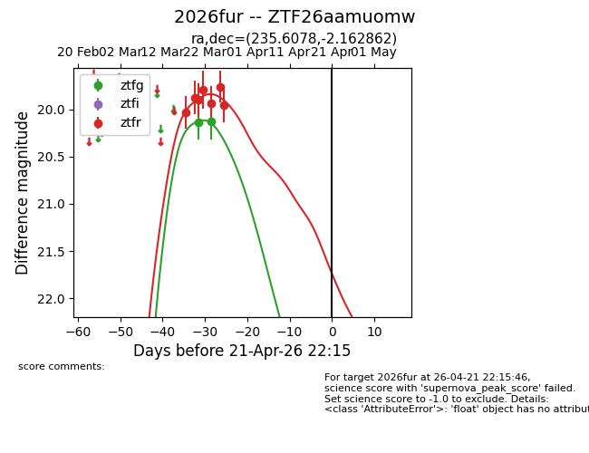
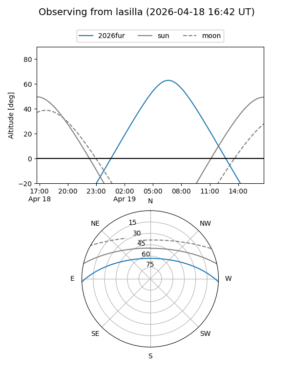
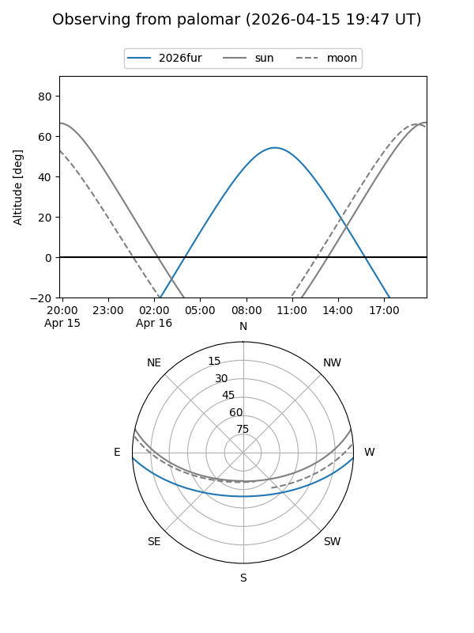
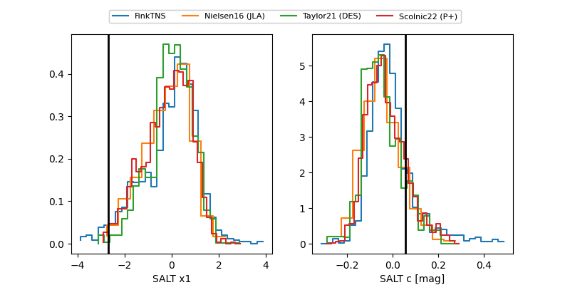

2026fur
Target 2026fur at 2026-04-21 22:20
Aliases and brokers:
FINK: link
Lasair: link
ALeRCE: link
TNS: link
YSE: link
alt names
ZTF26aamuomw (ztf,fink_ztf)
2026fur (tns,yse)
Coordinates:
equatorial (ra, dec) = 235.6078,-2.16286
equatorial (HMS+DMS) = 15:42:25.87,-02:09:46.30
galactic (l, b) = (4.4376,+39.48538)
Flags:
Photometry:
last ztfg=20.13, ztfr=19.96
2 ztfg, 7 ztfr detections
Lightcurve

Visibility


Additional plots
